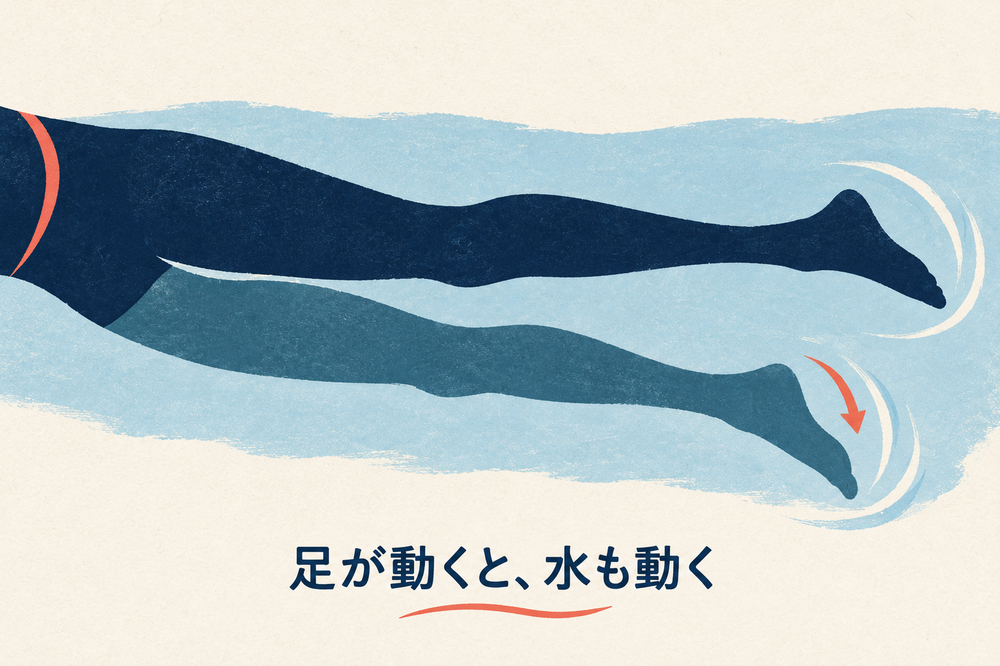
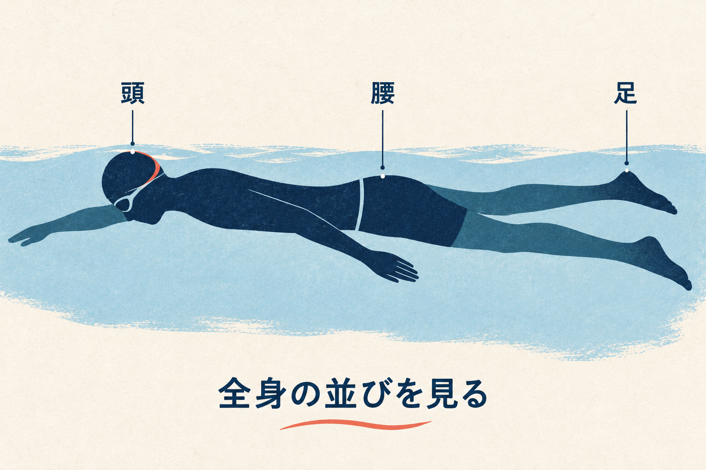
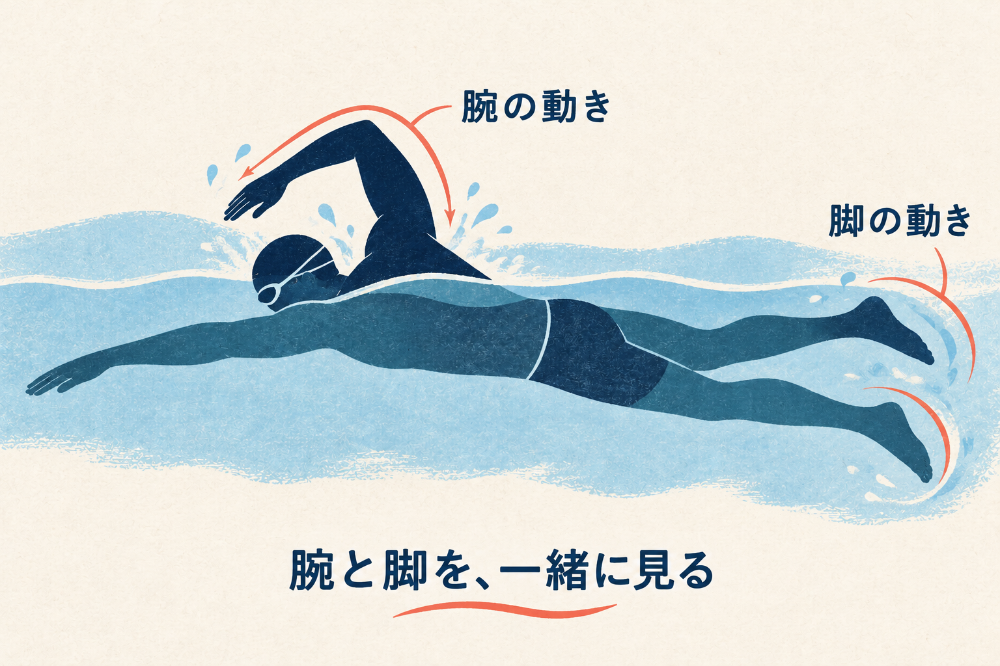
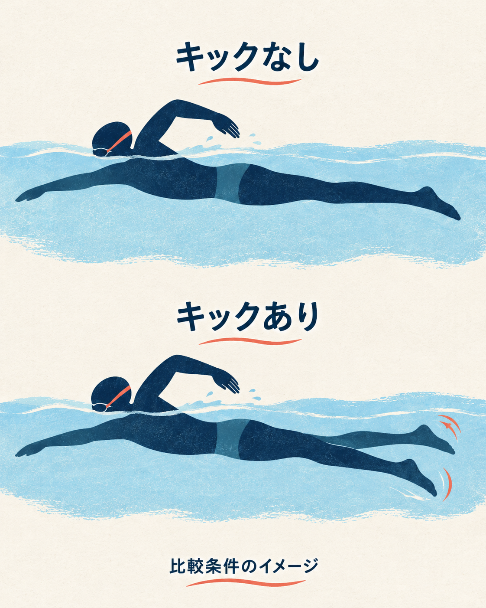
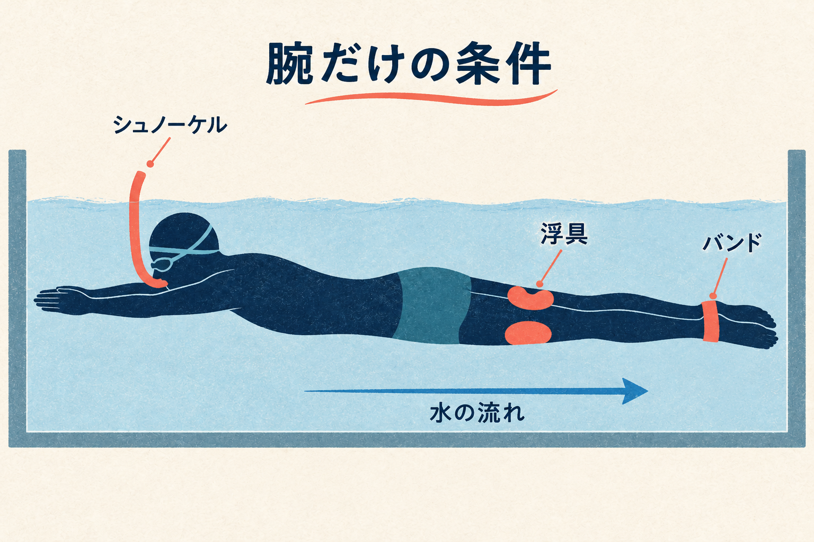
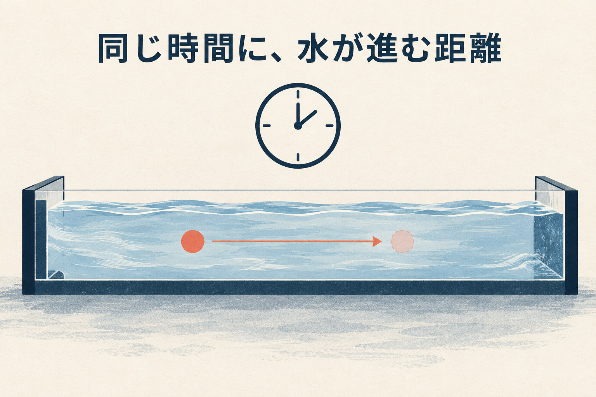
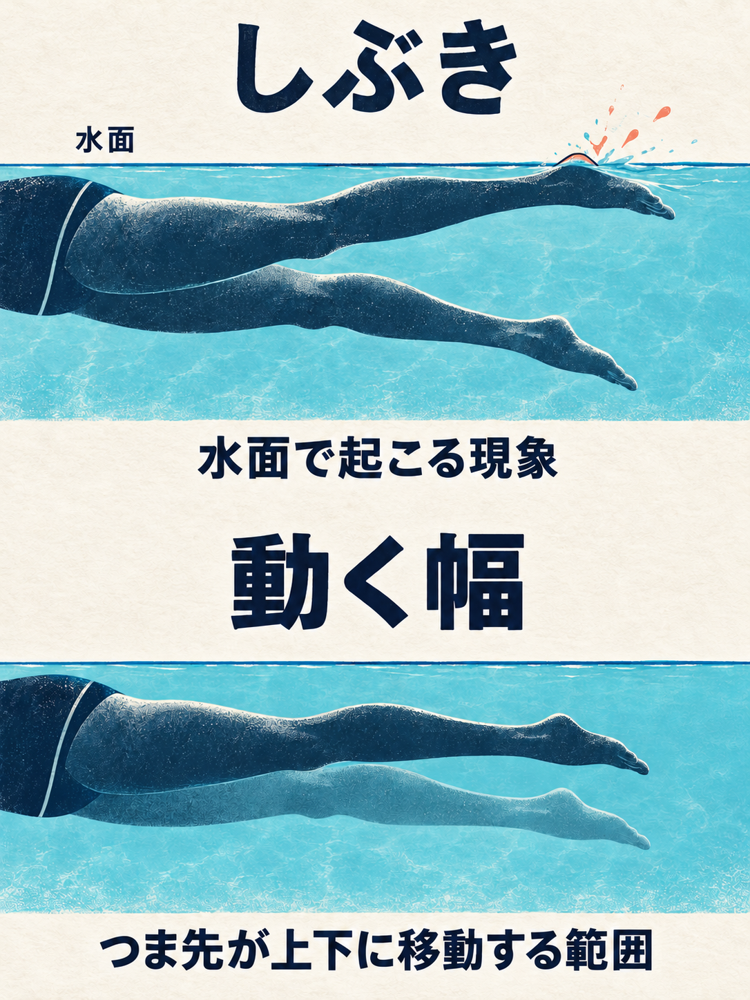
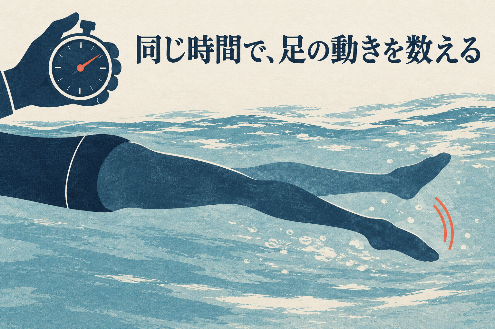
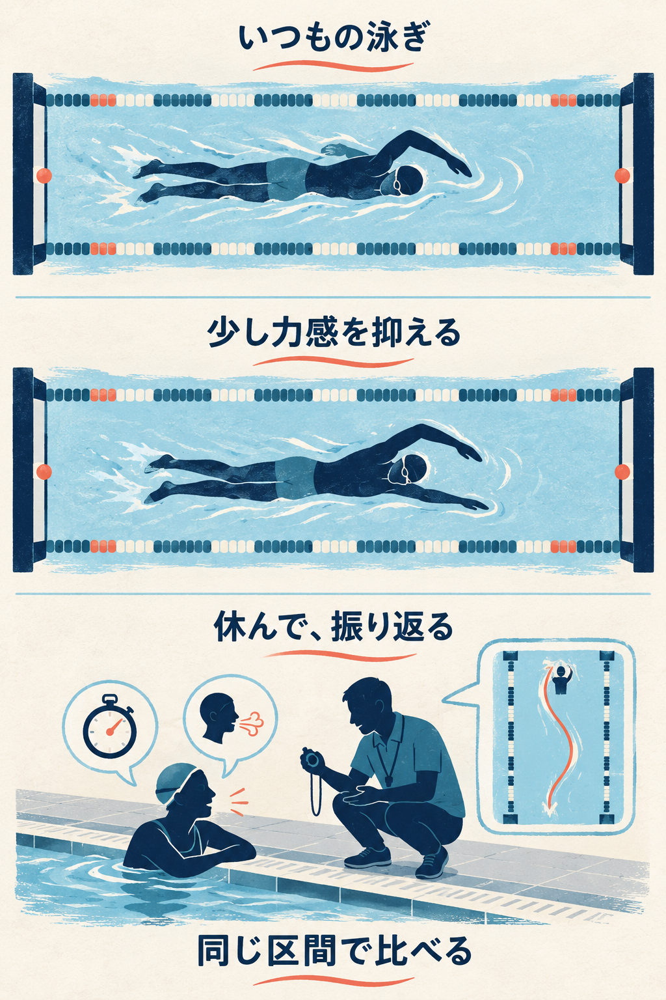

SWIMMING RESEARCH / 08
クロールのキックは、何のため？
2026年10月20日 · クロールのキック

足を動かすと、進み方だけでなく姿勢も変わる
クロールで疲れてくると、足を動かすのを少し休みたくなる。反対に、「もっと速く」と思うと、水しぶきが大きくなるほど頑張ってしまう。キックは、どのくらい頑張ればいいのでしょう。
キックには、前へ進むのを助ける働きと、泳ぐ姿勢やリズムを支える働きがあります。 ただし、「使うと速くなった」という研究から、「強くするほどよい」とは言えません。足だけの頑張りではなく、身体全体がどう泳げているかを見ていきましょう。
1 キックは、前へ進むためだけのもの？
クロールのキックは、左右の脚を交互に上下させる動きです。水を動かすと、足も水から力を受けます。そのうち、泳ぐ向きへ働く力が前進を助けます。「足が下へ動く」という見た目と、「身体が前へ進む」という働きは、同じ向きの矢印にはなりません。
もう一つ見たいのが姿勢です。身体は、ただ水平に置かれているわけではありません。腕を動かし、息継ぎで顔を横へ向け、そのたびに身体の向きやバランスが変わります。足の動きも、その全体の動きに関わっています。
キックは「前に進む」だけで見る？
全身の泳ぎとして見る

足の動きが水へ伝わり、身体が進む働きの一部になる。

頭から腰、足までの並びも見る。脚だけを切り離して考えない。

腕と脚の動くタイミングも、全身の泳ぎの一部。
米国の水泳団体USMSで、コーチのAndrew Sheaffは、キックを「前進」「バランス」「身体が左右へ回るリズム」という複数の役割で説明しています。これは指導者による解説であり、すべての人に同じ打ち方を割り当てる実験結果ではありません。USMSの解説
ここでの持ち帰りは、「足で何メートル進めたか」だけでキックを評価しないこと。腕と一緒に使ったとき、腰や脚の位置、呼吸のしやすさ、泳ぎのつながりがどうなるかも大切です。
2 キックを使うと、実際に速くなる？
Gourgoulisらの研究では、女性泳者9人が25mのクロールを全力で泳ぎ、キックを使う場合と使わない場合を比べました。キックありでは平均の泳速度が上がり、胴体の傾きも小さくなりました。ここでいう傾きは、横から見た胴体と水平との角度です。Gourgoulisら、2014
つまり、この比較では「足を加えると前進が速くなり、身体の向きも変わった」のです。研究者は、脚からの前進する力に加えて、姿勢の変化も速さに関わった可能性を考えています。ただし、姿勢だけが速さを変えたと切り分けた実験ではありません。
比べたのは「キックなし」と「あり」

女性泳者9人が、25mを全力で泳ぐ条件。
同じ研究で、キックも使う条件と比べた。
大事なのは、比べたのがキックの「あり・なし」だという点です。弱いキック、中くらい、強いキックを順に比べた研究ではありません。短い距離の全力泳の結果から、長く泳ぐときも足に力を入れ続ければよい、とは決められません。
「キックは役に立つの？」には手がかりがあります。でも「自分はどこまで強くすべき？」には、もう一段、条件を分けて考える必要があります。
3 キックを止めると、水の抵抗は必ず増える？
水の抵抗とは、進む身体を水が押し戻す働きのことです。脚が下がれば泳ぎにくく感じるかもしれません。しかし、キックをすると脚そのものが水の中を動くため、姿勢の効果と動きの効果を一緒に考える必要があります。
Naritaらは男性競泳選手7人に、流れる水の中で泳いでもらいました。「腕と脚を使う泳ぎ」と「腕だけの泳ぎ」を、同じ速さの条件で比較しています。速さは毎秒1.1mと1.3mの2条件。これは1秒間に、それぞれ1.1m、1.3m進む速さに相当します。Naritaら、2018・著者稿
流水プールでは、速さをそろえて比較

男性泳者7人。毎秒1.1mと1.3m。腕のみは太腿にプルブイ、足首にバンド。全条件でシュノーケルを使った。

この条件で抵抗係数に明確な差は見つからなかった。どの速さでも同じ、とは決められない。
ここには重要な仕掛けがあります。腕だけの条件では、太ももの間に浮具を挟み、足首をバンドで固定しました。 全条件でシュノーケルも使っています。いつもの泳ぎから足を止め、脚が自由に沈む状況とは違います。
身体の大きさや速さを考慮した「抵抗の指標」（値が大きいほど、水から受ける進みにくさが大きいことを表す数値）では、腕と脚を使う場合と腕だけの場合に、統計的にはっきりした差は認められませんでした。ただし、人数が少なく、速さによって違い方が変わる可能性も示されました。「差を確かめきれなかった」と「完全に同じ」は別です。
前の研究は全力泳の速さと姿勢、この研究は決めた速さでの抵抗を見ています。答えている問いが違うのです。これらを合わせても「キックをなくせばよい」「必ず抵抗が減る」という結論にはなりません。
4 水しぶきが大きければ、よく働くキック？
「強いキック」という言葉には、違う動きが混ざりがちです。脚に力を入れること。足を上下に大きく動かすこと。同じ時間に足を動かす回数を増やすこと。この3つは分けて考えましょう。
たとえば「力を抜こう」としたとき、足の回数まで極端に減り、呼吸のたびに脚が大きく開いたら、変えたのは力の入れ方だけではありません。逆に、大きなしぶきを立てても、その見た目だけでは身体がどれだけ前へ進んだかは分かりません。
しぶき・動く幅・回数は別のもの

見た目だけで「効いている」と決めない
水面を足が出入りすると水が跳ねる。しぶきだけで進む働きは測れない。
つま先が上下にどれだけ移動するかを見る図。膝だけを曲げる動きの指示ではありません。

同じ時間に何回動いたか。幅が大きいことや、強い力感とは分ける。
Sheaffは指導解説で、足が水から大きく出る動きや、幅を過剰に広げる動きを注意点に挙げています。足が空中にある間は、その足で水を押せません。しぶきを増やすことを練習の目標にする必要はありません。USMS・キックの注意点
一方で、この記事は「膝を一切曲げない」「しぶきをゼロにする」とも勧めません。形を一つに固定するより、まずは足がどこを通り、身体がどう進んでいるかを観察します。外から見る人には「もっと強く」だけでなく、「足が水面から大きく離れていないかを見てほしい」と頼むと、確認する場所が具体的になります。
5 次の一本では、少し力を抑えたらどうなるかを見る
次は、キックをなくす実験ではなく、普段の泳ぎと「キックの力感を少し抑えた泳ぎ」を比べる観察案です。これは原著の実験手順ではなく、本記事の提案です。楽にクロールで泳げる人が、監視のあるプールで、十分休みながら行います。子どもは指導者と一緒に確かめましょう。
まず、無理なく泳げる短い区間を決めます。いつも余裕を持って泳げるなら、たとえば25m。長く感じる人は指導者ともっと短い区間を選びます。次の一本も、同じスタート地点から同じゴールまでにそろえます。
一度に変えるのは、力の感じ方だけ

- 1いつものキックで泳ぐ
楽に泳げる同じ区間で、タイム・息の余裕・進路の蛇行を確認。
- 2少し力感を抑えて泳ぐ
休んでから同じ区間へ。腕のペースや呼吸も、できるだけそろえる。
- 3三つを一緒に振り返る
タイムだけでなく、息の余裕と進路も比べる。画像の曲がった道筋は蛇行の例です。苦しければ休む。
普段の泳ぎを確認したら、休んでからキックの力感を少し抑えます。足を止めたり、腕を意識的に速く回して埋め合わせたりはしません。腕のテンポ、呼吸、壁の蹴り方も、できる範囲で普段にそろえます。実際には他の動きも変わるので、厳密な実験ではありません。
見るものは、区間のタイム、息の余裕、進む道筋が左右へ曲がっていないかです。身体が長い軸を中心に左右へ回ることと、進路が蛇行することは別です。ここでは、自然な身体の回転を止めるのではなく、泳ぐ道筋を見ます。「速くなった気がする」だけでなく、同じ距離を泳いだ時間と、一緒に泳ぎやすさを確かめます。時計や見てくれる人がいなければ、速さが変わったとは判定せず、感覚のメモにとどめます。
手で測る時間にはずれもあるため、一回の小さな差では決めず、休んで同じ条件でもう一度比べます。そのうえで、時間が大きく変わらず、息が楽になったなら、その力感でも泳ぎを支えられる可能性があります。次の練習でもう一度確認してみましょう。時間がかかり、進路の蛇行や息継ぎのしにくさも増えたなら、いったん普段の打ち方に戻し、足と腕のタイミングを指導者と見直します。速くなってもすぐ苦しくなるなら、その使い方を長く続けられるとは限りません。
一回の小さなタイム差で、永久に打ち方を決めなくて大丈夫です。慣れや疲れも結果を変えます。今日確かめたいのは「足をもっと頑張るべきか」より、自分のキックが、進むことと泳ぎを支えることにどう役立っているかです。
参考資料と確認範囲
- Gourgoulis V, et al. (2014). The effect of leg kick on sprint front crawl swimming. Journal of Sports Sciences, 32(3), 278–289. PubMed / 所属大学提供の抄録。対象・比較・結果は抄録を確認。個別の速さや角度の実測値は掲載していません。
- Narita K, Nakashima M, Takagi H. (2018). Effect of leg kick on active drag in front-crawl swimming: Comparison of whole stroke and arms-only stroke during front-crawl and the streamlined position. Journal of Biomechanics, 76, 197–203. 著者稿PDF。方法・結果・考察・限界を確認。
- Andrew Sheaff. Freestyle Kick: The Complete Guide. U.S. Masters Swimming。公開日表示は確認できず。本文の役割・注意点を確認。埋め込み動画の動作や音声を確認したものではありません。
確認日：2026年10月20日。少人数の泳者・競泳選手の比較と指導者の解説を扱っています。初心者や子ども全員に同じキックが最適と示した研究ではありません。